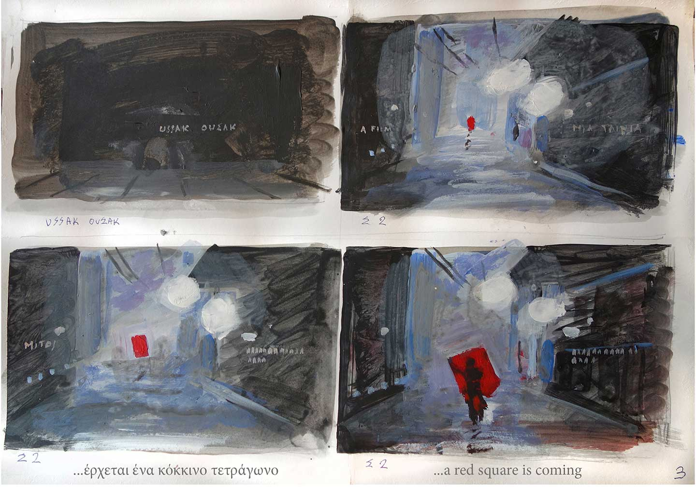
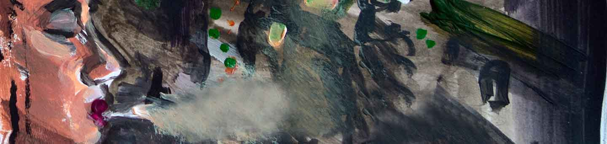
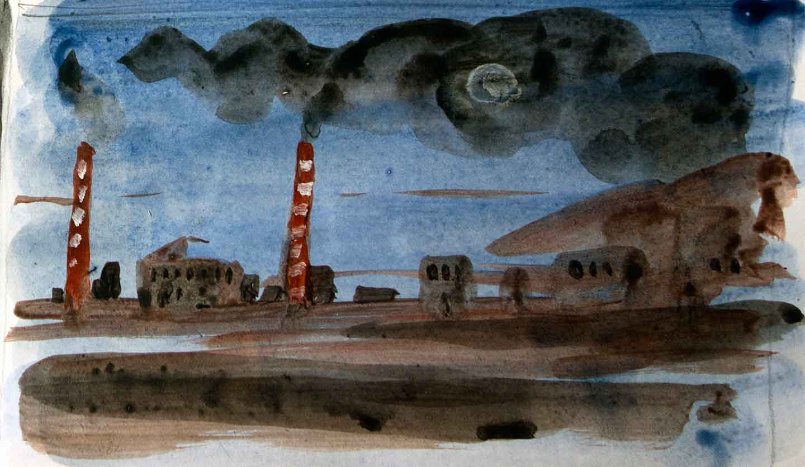

Ουσσάκ, η ταινία
Σε μια χώρα που πάσχει, κάπου στο μέλλον, πρόσωπα βυθισμένα σε απάθεια και ψευδαισθήσεις, μέσα από συναντήσεις και άγριες συγκρούσεις, αφυπνίζονται και διεκδικούν μιαν άλλη ζωή.
Κάνοντας την ταινία
Ο Κυριάκος Κατζουράκης έχει ζωγραφίσει όλες τις σκηνές του USSAK, φτιάχνοντας ένα ιδιόμορφο storyboard, το οποίο από μόνο του στέκεται σαν ολοκληρωμένο έργο.

Το σενάριο

Πριν από τέσσερα χρόνια ο Κυριάκος Κατζουράκης με την Κάτια Γέρου άρχισαν να γράφουν το σενάριο του USSAK εν μέσω της αναταραχής στη χώρα.
Σε μια χώρα που πάσχει, κάπου στο μέλλον, πρόσωπα βυθισμένα σε απάθεια και ψευδαισθήσεις, μέσα από συναντήσεις και άγριες συγκρούσεις, αφυπνίζονται και διεκδικούν μιαν άλλη ζωή.
Με αυτό το άλμα στο χρόνο (είκοσι με τριάντα χρόνια μετά από σήμερα), η ταινία προβάλλει στο μέλλον φόβους και ελπίδες.
Μπορεί κανείς μέσα σε ακραίες συνθήκες να διεκδικήσει μια ολοκληρωμένη ζωή και όχι μόνον την επιβίωσή του;
Μήπως αυτό είναι ουτοπία; Και τι σημαίνει ουτοπία;
Σ' αυτό το τελευταίο η ταινία απαντάει. Λέγεται κάπου στο τέλος της αφήγησης: "Ο ουτοπιστής, φίλε, είναι ο απόλυτος υλιστής".

Ο Κατζουράκης αναφέρει: "το σενάριο, στη διάρκεια της τετραετίας που γραφόταν, άρχισε από μυθοπλασία να μετατρέπεται σε ένα ιδιότυπο ντοκυμαντέρ. Καταστάσεις στο σενάριο που ανήκαν στη σφαίρα της φαντασίας, άρχισαν να συμβαίνουν στην πραγματικότητα! Έτσι λοιπόν, η υλοποίηση της ταινίας έγινε επείγουσα"
Την υλοποίηση έχει αναλάβει η ομάδα παραγωγής και εκτέλεσης "ARTemis" η οποία αποτελείται από εξαιρετικό επιτελείο συνεργατών.
Εδώ και ένα χρόνο έχουν αρχίσει οι πρόβες με τους ηθοποιούς, το δύσκολο scouting σε Αθήνα και Μεσσηνία.
Σαφώς η υλοποίηση της ταινίας στηρίζεται στη γενναιοδωρία, την ανιδιοτέλεια και τη διαθεσιμότητα όλων των εμπλεκομένων, καθώς και στην υποστήριξη των φίλων που προσφέρουν την παρουσία τους, το σπίτι τους, το αμάξι τους, τις συμβουλές τους. Χωρίς όλα τα παραπάνω η πραγματοποίηση της ταινίας θα έμπαινε "κυριολεκτικά" στη σφαίρα της επιστημονικής φαντασίας!
Ο Κατζουράκης και η Γέρου λένε: "Σήμερα 15 χρόνια μετά από την πρώτη μας ταινία Ο Δρόμος προς τη Δύση, που έχει θέμα τους πρόσφυγες, μιλάμε για τη δική μας πραγματικότητα σα νάμαστε πρόσφυγες στον τόπο μας."
Ο στόχος μας
Ο προϋπολογισμός της ταινίας είναι 270.000 ευρώ. Το USSAK έχει την στήριξη του Ελληνικόυ Κέντρου Κινηματογράφου με το ποσό των 90.000 ευρώ. Ένα μέρος καλύπτεται από κεφαλαιοποιήσεις αμοιβών (σενάριο, σκηνοθεσία κ.λπ.), παροχές φορέων, Δήμων και ιδιωτών.
Υπολείπεται όμως ένα ποσό της τάξης των 80.000 ευρώ.
Πως μπορείτε να βοηθήσετε
Αυτή η καμπάνια αποσκοπεί στη συγκέντρωση του παραπάνω ποσού. Η ελάχιστη συνεισφορά σας είναι πολύτιμη!
ARTemis Productions info@artemisproductions.gr PIRAEUS BANK IBAN: GR86 0171 7390 0067 3913 7942 248 SWIFT-BIC: PIRBGRAA